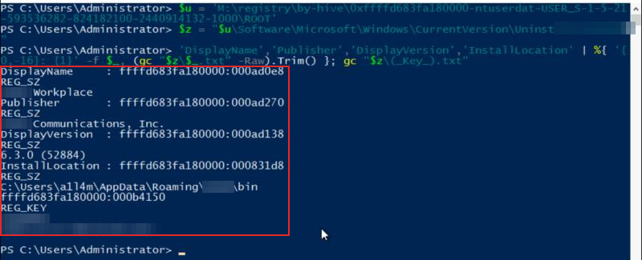
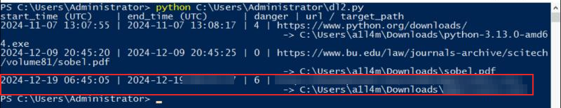
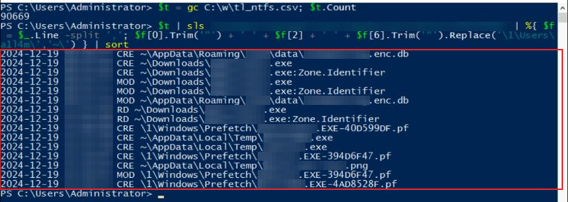
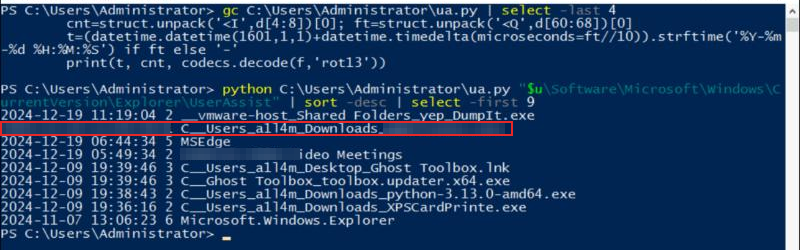
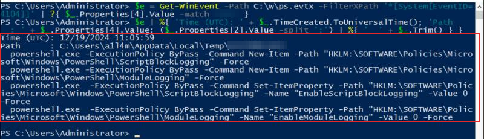
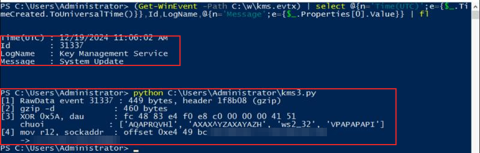
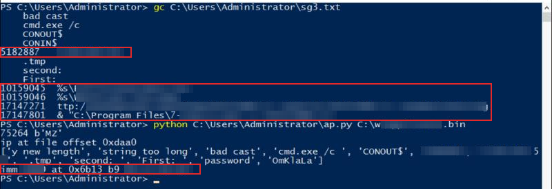
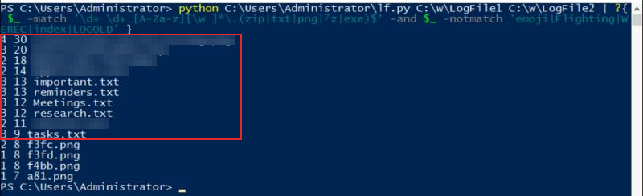

Boomer - Lazarus Group
- Lab: Boomer - Lazarus Group trên CyberDefenders. Nhóm Endpoint Forensics, độ khó Insane, 17 câu hỏi, đã retired.
- Dữ liệu:
memory.raw: memory dump 5 GB của máy trạm Windows 10 (build 19041). Người dùng làa1l4m.strings_out.txt: kết quảstringstrên dump, lab cung cấp sẵn (775 MB, mã hóa UTF-16).- Công cụ:
- MemProcFS với chế độ forensic, để gắn dump thành ổ
M:, đọc registry và file, rồi sinh timeline. - PowerShell,
Get-WinEventvà vài script Python nhỏ: đọc SQLite, UserAssist,$LogFile, giải mã payload. - Quy ước:
- Ảnh là ảnh chụp cửa sổ PowerShell trên máy lab. Giờ là UTC.
- Khung đỏ đánh dấu chỗ cần chú ý. Vùng làm mờ là đáp án.
- Không có file mẫu nào được chạy. File tải về chỉ được đọc byte để phân tích tĩnh.
Tóm tắt kết quả
- Người dùng bị lừa:
- Ngày 17/12/2024, người dùng cài một ứng dụng họp trực tuyến vào thư mục AppData của mình.
- Ngày 19/12, lúc đang trong cuộc họp, người dùng tải một file
.exetừ dịch vụ chia sẻ file ẩn danh. Edge gắn cờ nguy hiểm (danger_type = 6) cho file này. - File được chạy:
- Khoảng 4 giờ 20 phút sau khi tải, file được chạy từ thư mục Downloads (theo UserAssist).
- Ngay sau đó, một script
.ps1trong thư mục Temp tắt Script Block Logging và Module Logging của PowerShell. - Payload giấu trong Event Log:
- Lúc 11:06:02 UTC, một sự kiện ID 31337 được ghi vào log "Key Management Service".
- Phần RawData của sự kiện là shellcode reverse TCP, nén gzip rồi XOR, trỏ tới một máy chủ C2.
- Lấy và xóa dữ liệu:
- Từ 11:14:56 UTC, kẻ tấn công tải một file
.7zvề Temp và giải nén ra một chương trình lấy dữ liệu cùng một công cụ xóa file an toàn. - Chương trình đó nén 6 file của người dùng vào một file zip, nhét zip vào bên trong một file PNG.
- Sau đó các file gốc bị xóa an toàn (ghi đè trước khi xóa).
Bước 1: ứng dụng họp và thời điểm cài
- Mục tiêu: tìm ứng dụng họp và thời điểm cài đặt.
- Cách làm:
- Mở dump bằng MemProcFS:
memprocfs.exe -device memory.raw -forensic 1 -mount M. - Khóa Uninstall nằm trong hive NTUSER.DAT của người dùng, vì ứng dụng cài theo từng user.
- MemProcFS cho mỗi khóa một file
(_Key_).txtchứa thời điểm ghi cuối (LastWrite).

- Nhận định:
- Ứng dụng cài vào AppData\Roaming, đúng kiểu cài không cần quyền admin.
- Hướng giải:
- Tên ứng dụng: phần đầu của DisplayName.
- Thời điểm cài: LastWrite của khóa, lấy đến phút.
Bước 2: tải file trong cuộc họp
- Mục tiêu: tìm URL và thời điểm tải file đáng ngờ.
- Cách làm:
- Chép file
Historycủa Edge (trongM:\forensic\files\ROOT\Users\a1l4m\AppData\Local\Microsoft\Edge\User Data\Default\) ra đĩa. - Đọc bảng
downloadsbằng Pythonsqlite3. Thời gian WebKit tính bằng micro giây từ 1601-01-01.

- Nhận định:
- Bình thường trên máy này, 2 lần tải trước đến từ python.org và bu.edu, danger_type là 4 và 0.
- Lần tải thứ 3 là bất thường:
- File thực thi đến từ một dịch vụ upload ẩn danh.
- Thời điểm tải rơi vào khoảng người dùng đang trong cuộc họp (Bước 3).
- Bảng
downloads_url_chainscó thêm cùng URL với tham số?download=1. - Hướng giải:
- URL: cột
tab_url(bỏ tham số?download=1). - Thời điểm tải:
end_time, lúc file được ghi xong.
- URL: cột
Bước 3: thời điểm vào và rời cuộc họp
- Mục tiêu: xác định khung giờ của cuộc họp.
- Cách làm: lọc
M:\forensic\csv\timeline_ntfs.csvcủa MemProcFS theo tên file của ứng dụng họp, file tải về và các công cụ xuất hiện sau đó.

- Nhận định:
- Ứng dụng tạo file database của cuộc họp khi người dùng vào họp, và cập nhật nó trong suốt cuộc họp.
- Timeline MFT chỉ giữ lần sửa cuối của file. Walkthrough chính thức đọc nhật ký NTFS và lấy sự kiện đóng file cuối cùng làm giờ rời họp, muộn hơn MOD trong ảnh khoảng 2 giây.
- File
.exeđược tạo ở Downloads trong lúc file database của cuộc họp vẫn đang được cập nhật. - Mã cuộc họp nằm trong chính file database đó, nhưng file đã bị mã hóa. Walkthrough lấy khóa giải mã từ tiến trình LSASS bằng MemProcFS và mở file bằng DB Browser for SQLCipher. Tôi không làm lại phần này trên máy lab.
- Hướng giải: giờ vào họp là CRE của file database. Giờ rời họp là sự kiện cuối cùng trên file đó trong nhật ký NTFS.
Bước 4: chạy file và tắt ghi log
- Mục tiêu: tìm thời điểm file được chạy và file script dùng để tắt ghi log.
- Cách làm:
- Giải mã tên giá trị UserAssist (ROT13) và đọc FILETIME ở offset 60 của dữ liệu.
- Đọc sự kiện 4104 (Script Block Logging) trong
Microsoft-Windows-PowerShell%4Operational.evtx.


- Nhận định:
- Thời điểm chạy trong UserAssist khớp với các sự kiện tiếp theo: file prefetch của chương trình được tạo vài giây sau, và script tắt log chạy ngay sau đó.
- Sau sự kiện này, log chỉ còn 2 dòng 4104 rời rạc. Việc tắt ghi log đã có hiệu lực.
- Hướng giải: thời điểm chạy là dòng UserAssist của file trong Downloads. Tên file script là phần cuối của trường Path.
Bước 5: payload giấu trong Event Log
- Mục tiêu: tìm IP và port của C2.
- Cách làm:
- Trong
strings_out.txtcó chuỗiKmsRequests. Walkthrough cho thấy script dùngWrite-EventLog -LogName 'Key Management Service' -Source KmsRequests -EventID 31337 -RawData .... - Đọc sự kiện đó từ file
Key Management Service.evtxmà MemProcFS khôi phục, lấy trường Binary (RawData). - Giải nén gzip, thử XOR 1 byte cho tới khi ra phần đầu quen thuộc của shellcode x64 (
fc 48 83 e4 f0), rồi tìm cấu trúcsockaddr_inmà shellcode nạp vào R12.

- Nhận định:
- Event Log được dùng làm nơi cất payload. Nội dung nằm trong một log hệ thống ít ai đọc, và không có file nào trên đĩa.
- Hướng giải: 2 byte sau
02 00là port (big-endian), 4 byte tiếp theo là IPv4.
Bước 6: máy chủ lưu trữ và công cụ lấy dữ liệu
- Mục tiêu: tìm C2 lưu trữ của chương trình tải về, URL của gói công cụ và các tên file liên quan.
- Cách làm:
- Lọc
strings_out.txt(đọc bằng UTF-16) theo một số từ khóa. - Chép file .exe tải về mà MemProcFS khôi phục (75.264 byte, đúng kích thước tải về) và đọc byte của nó bằng Python. Không chạy file.

- Nhận định:
- Cụm chuỗi quanh IP ("cmd.exe /c", "CONOUT$", "First:", "second:") là của một backdoor chạy lệnh qua socket. Hằng số trong
mov ecxlà port, vì nó được truyền vàohtonstrước khi gọiconnect. - 2 chuỗi định dạng
%s\...là tên file zip và tên file ảnh dùng để chứa zip. - Hướng giải:
- C2 lưu trữ: IP trong ảnh cộng port là giá trị thập phân của hằng
0x....trong lệnhmov ecx. - URL gói công cụ: chuỗi
http://...7ztrong lệnh tải. - Tên zip và tên file chứa zip: 2 chuỗi
%s\....
- C2 lưu trữ: IP trong ảnh cộng port là giá trị thập phân của hằng
Bước 7: file bị lấy và bị xóa
- Mục tiêu: liệt kê các file bị nén và tìm công cụ xóa.
- Cách làm:
- Các file này đã bị xóa, nên MFT không còn.
$UsnJrnl:$Jkhôi phục từ RAM chỉ chứa bản ghi tới 04:21 ngày 19/12. $LogFile(nhật ký giao dịch NTFS) vẫn giữ tên file trong các bản ghi. Tôi quét tên file UTF-16 có đuôi .zip/.txt/.png/.7z/.exe trong 2 bản$LogFilemà MemProcFS khôi phục (64 MB và 4 MB), rồi bỏ các file emoji của Edge.

- Nhận định:
- Thứ tự trong timeline (Bước 3): công cụ xóa được giải nén lúc 11:14:56, prefetch của nó được tạo cùng giây với file PNG chứa zip.
- 5 file
.txtvà 1 file.pngcủa người dùng chỉ còn tên trong$LogFile. Đây là dấu hiệu chúng đã bị nén vào zip rồi bị xóa. - Walkthrough chính thức thấy thêm các lần đổi tên liên tiếp thành chuỗi chữ cái, kiểu đổi tên mà công cụ xóa an toàn này dùng trước khi xóa.
- Hướng giải:
- Công cụ xóa: file
.execòn lại trong danh sách, có file prefetch trongC:\Windows\Prefetch. - File tên dài nhất: dòng có độ dài lớn nhất trong 6 file của người dùng.
- Thời điểm chạy file dùng để lấy dữ liệu: walkthrough lấy thời điểm file chứa zip được tạo.
- Công cụ xóa: file
Dòng thời gian
| Thời điểm (UTC) | Sự kiện | Nguồn |
|---|---|---|
| 17/12/2024 (giờ là đáp án) | Ứng dụng họp được cài vào AppData\Roaming | Khóa Uninstall (NTUSER.DAT) |
| 19/12 05:49:34 | Ứng dụng họp được mở lần cuối | UserAssist |
| 19/12 (đáp án) | File database cuộc họp được tạo (vào họp) | Timeline NTFS |
| 19/12 06:45:05 | Bắt đầu tải file .exe từ dịch vụ upload ẩn danh | Edge History, NTFS |
| 19/12 (đáp án) | File database cuộc họp được sửa lần cuối (rời họp) | Timeline NTFS |
| 19/12 (đáp án) | File .exe chạy từ Downloads | UserAssist |
| 19/12 11:05:59 | Script .ps1 trong Temp tắt Script Block và Module Logging | PowerShell 4104 |
| 19/12 11:06:02 | Payload shellcode được ghi vào log Key Management Service (ID 31337) | KMS evtx |
| 19/12 11:14:56 | Gói .7z được giải nén: chương trình lấy dữ liệu, công cụ xóa, thư viện zlib/minizip/libpng | Timeline NTFS, strings |
| 19/12 (đáp án) | File PNG chứa zip được tạo, công cụ xóa chạy | Timeline NTFS, prefetch |
| 19/12 11:19:04 | DumpIt chạy để lấy memory dump | UserAssist |